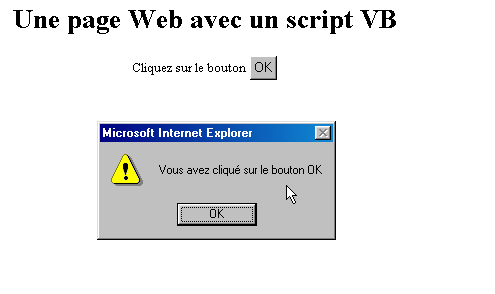
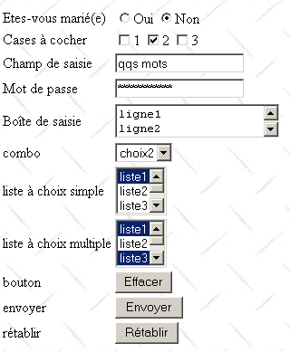

2. De basis
In dit hoofdstuk behandelen we de basisbeginselen van webprogrammering. Het belangrijkste doel is om de belangrijkste principes van webprogrammering te introduceren, voordat deze in de praktijk worden gebracht met een specifieke programmeertaal en omgeving. Het bevat talrijke voorbeelden die je best zelf uitprobeert om je geleidelijk aan de filosofie van webontwikkeling eigen te maken.
2.1. De onderdelen van een webapplicatie
 |
Nummer | Functie | Veelvoorkomende voorbeelden |
OS Server | Linux, Windows | |
Webserver | Apache (Linux, Windows) IIS (NT), PWS (Win9x) | |
Scripts die aan de serverzijde worden uitgevoerd. Dit kan gebeuren via modules van de server of door programma’s buiten de server (CGI). | PERL (Apache, IIS, PWS) VBSCRIPT (IIS, PWS) JAVASCRIPT (IIS, PWS) PHP (Apache, IIS, PWS) JAVA (Apache, IIS, PWS) C#, VB.NET (IIS) | |
Database – Deze kan zich op dezelfde computer bevinden als het programma dat er gebruik van maakt, of op een andere via internet. | Oracle (Linux, Windows) MySQL (Linux, Windows) Access (Windows) SQL Server (Windows) | |
OS Client | Linux, Windows | |
Webbrowser | Netscape, Internet Explorer | |
Scripts die aan de clientzijde in de browser worden uitgevoerd. Deze scripts hebben geen toegang tot de schijven van de clientcomputer. | VBscript (IE) JavaScript (IE, Netscape) Perl-script (IE) Applets JAVA |
2.2. Gegevensuitwisseling in een webapplicatie met een formulier
 |
Nummer | Functie |
De browser vraagt voor de eerste keer om een URL (http://machine/url). Er zijn geen parameters doorgegeven. | |
De webserver stuurt de webpagina van deze URL naar de browser. Deze kan statisch zijn of dynamisch gegenereerd worden door een serverscript (SA) dat mogelijk gebruik heeft gemaakt van de inhoud van databases (SB, SC). In dit geval zal het script detecteren dat URL is opgevraagd zonder dat er parameters zijn doorgegeven, en zal het de oorspronkelijke pagina WEB genereren. De browser ontvangt de pagina en geeft deze weer (CA). Scripts aan de kant van de browser (CB) hebben de door de server verzonden oorspronkelijke pagina mogelijk gewijzigd. Vervolgens wordt de webpagina gewijzigd door interacties tussen de gebruiker (CD) en de scripts (CB). Met name worden de formulieren ingevuld. | |
De gebruiker bevestigt de gegevens in het formulier, die vervolgens naar de webserver moeten worden verzonden. De browser vraagt het oorspronkelijke URL of, afhankelijk van de situatie, een ander script opnieuw op en stuurt tegelijkertijd de waarden van het formulier naar de server. Hiervoor kan hij gebruikmaken van twee methoden, namelijk GET en POST. Bij ontvangst van het verzoek van de client activeert de server het script (SA) dat gekoppeld is aan de aangevraagde URL; dit script detecteert de parameters en verwerkt deze. | |
De server levert de pagina WEB af die door het programma is opgebouwd (SA, SB, SC). Deze stap is identiek aan de vorige stap 2. De uitwisselingen verlopen nu volgens stap 2 en 3. |
2.3. Enkele hulpmiddelen
Hieronder vindt u een lijst met bronnen voor het installeren en gebruiken van bepaalde tools voor webontwikkeling. In de bijlage vindt u hulp bij de installatie van deze tools.
- Apache, Installatie en implementatie, O'Reilly | |
- Programmeren in Perl, Larry Wall, O'Reilly - Toepassingen in Perl: CGI, Neuss en Vromans, O'Reilly - de documentatie HTML die bij Active Perl wordt geleverd | |
- Webprogrammering met PHP, Lacroix, Eyrolles - Gebruikershandleiding van PHP, te downloaden op de website van PHP | |
- Koppeling tussen WEB en de database onder WinNT, Alex Homer, Eyrolles | |
- JAVA Servlets, Jason Hunter, O'Reilly - Netwerkprogrammeren met Java, Elliotte Rusty Harold, O'Reilly - JDBC en Java, George Reese, O'Reilly | |
- De handleiding van MySQL is beschikbaar op de website van MySQL - Oracle 8i onder Linux, Gilles Briard, Eyrolles - Oracle 8i onder NT, Gilles Briard, Eyrolles |
2.4. Aantekeningen
In het vervolg gaan we ervan uit dat een aantal hulpprogramma's is geïnstalleerd en hanteren we de volgende notaties:
notatie | betekenis |
root van de Apache-boomstructuur | |
root van de door Apache geleverde webpagina's. De webpagina's moeten zich onder deze root bevinden. Zo komt de URL URL http://localhost/page1.htm overeen met het bestand <apache-DocumentRoot>\page1.htm. | |
de hoofdmap van de boomstructuur die gekoppeld is aan de alias cgi-bin en waar CGI-scripts voor Apache kunnen worden geplaatst. Zo komt de URL http://localhost/cgi-bin/test1.pl overeen met het bestand <apache-cgi-bin>\test1.pl. | |
hoofdmap van de webpagina’s die door PWS worden gegenereerd. De webpagina’s moeten zich in deze rootmap bevinden. Zo komt de http://localhost/page1.htm van URL overeen met het bestand <pws-DocumentRoot>\page1.htm. | |
de hoofdmap van de Perl-boomstructuur. Het uitvoerbare bestand perl.exe bevindt zich doorgaans in <perl>\bin. | |
de hoofdmap van de PHP-taalstructuur. Het uitvoerbare bestand php.exe bevindt zich doorgaans in <php>. | |
de hoofdmap van de Java-structuur. De uitvoerbare bestanden die verband houden met Java bevinden zich in <java>\bin. | |
de hoofdmap van de Tomcat-server. Voorbeelden van servlets zijn te vinden in <tomcat>\webapps\examples\servlets en voorbeelden van pagina's in JSP in <tomcat>\webbapps\examples\jsp |
Raadpleeg voor elk van deze tools de bijlage, waarin hulp wordt geboden bij de installatie ervan.
2.5. Statische webpagina’s, dynamische webpagina’s
Een statische pagina wordt weergegeven door een bestand HTML. Een dynamische pagina wordt daarentegen „on-the-fly“ door de webserver gegenereerd. In deze paragraaf stellen we u diverse tests voor met verschillende webservers en verschillende programmeertalen om de universaliteit van het webconcept aan te tonen.
2.5.1. Statische pagina HTML (HyperText Markup Language)
Laten we eens kijken naar de volgende HTML-code:
<html>
<head>
<title>essai 1 : une page statique</title>
</head>
<body>
<center>
<h1>Une page statique...</h1>
</body>
</html>
wat de volgende webpagina oplevert:
De tests

test1
- start de Apache-server
- plaats het script essai1.html in <apache-DocumentRoot>
- bekijk de pagina URL http://localhost/essai1.html met een browser
- de Apache-server stoppen
test2
- de PWS-server starten
- het script essai1.html in <pws-DocumentRoot> plaatsen
- de URL-http://localhost/essai1.html-pagina bekijken met een browser
2.5.2. Een ASP-pagina (Active Server Pages)
Het script essai2.asp:
<html>
<head>
<title>essai 1 : une page asp</title>
</head>
<body>
<center>
<h1>Une page asp générée dynamiquement par le serveur PWS</h1>
<h2>Il est <% =time %></h2>
<br>
A chaque fois que vous rafraîchissez la page, l'heure change.
</body>
</html>
levert de volgende webpagina op:

De test
- de server PWS starten
- plaats het script essai2.asp in <pws-DocumentRoot>
- roep de pagina URL http://localhost/essai2.asp op met een browser
2.5.3. Een script PERL (Practical Extracting and Reporting Language)
Het script essai3.pl:
#!d:\perl\bin\perl.exe
($secondes,$minutes,$heure)=localtime(time);
print <<HTML
Content-type: text/html
<html>
<head>
<title>essai 1 : un script Perl</title>
</head>
<body>
<center>
<h1>Une page générée dynamiquement par un script Perl</h1>
<h2>Il est $heure:$minutes:$secondes</h2>
<br>
A chaque fois que vous rafraîchissez la page, l'heure change.
</body>
</html>
HTML
;
De eerste regel is het pad naar het uitvoerbare bestand perl.exe. Pas dit indien nodig aan. Zodra het script door een webserver wordt uitgevoerd, genereert het de volgende pagina:

De test
- webserver: Apache
- Bekijk ter informatie het configuratiebestand srm.conf of httpd.conf, afhankelijk van de Apache-versie, in <apache>\confs en zoek de regel over cgi-bin om de map <apache-cgi-bin> te vinden waarin u essai3.pl moet plaatsen.
- Plaats het script essai3.pl in <apache-cgi-bin>
- roep de URL http://localhost/cgi-bin/essai3.pl op
Merk op dat het langer duurt om de pagina perl te laden dan de pagina asp. Dit komt doordat het Perl-script wordt uitgevoerd door een Perl-interpreter die eerst moet worden geladen voordat het script kan worden uitgevoerd. Deze blijft niet permanent in het geheugen staan.
2.5.4. Een script PHP (Personal Home Page, HyperText Processor)
Het script essai4.php
<html>
<head>
<title>essai 4 : une page php</title>
</head>
<body>
<center>
<h1>Une page PHP générée dynamiquement</h1>
<h2>
<?
$maintenant=time();
echo date("j/m/y, h:i:s",$maintenant);
?>
</h2>
<br>
A chaque fois que vous rafraîchissez la page, l'heure change.
</body>
</html>
Het bovenstaande script genereert de volgende webpagina:
De tests


-
bekijk het Apache-configuratiebestand srm.conf of httpd.conf in <Apache>\confs
-
ter informatie: controleer de configuratieregels van php
test1
-
start de Apache-server
-
plaats essai4.php in <apache-DocumentRoot>
-
vraag de URL op via http://localhost/essai4.php
test2
-
de PWS-server starten
-
ter informatie: controleer de configuratie van PWS met betrekking tot PHP
-
essai4.php in <pws-DocumentRoot>\php plaatsen
-
vraag de URL-http://localhost/essai4.php op
2.5.5. Een script JSP (Java Server Pages)
Het script heure.jsp
<% //Java-programma dat de tijd weergeeft %>
<%@ page import="java.util.*" %>
<%
// code JAVA om de tijd te berekenen
Calendar calendrier=Calendar.getInstance();
int heures=calendrier.get(Calendar.HOUR_OF_DAY);
int minutes=calendrier.get(Calendar.MINUTE);
int secondes=calendrier.get(Calendar.SECOND);
// uren, minuten en seconden zijn globale variabelen
// die in de code HTML kunnen worden gebruikt
%>
<% // code HTML %>
<html>
<head>
<title>Page JSP affichant l'heure</title>
</head>
<body>
<center>
<h1>Une page JSP générée dynamiquement</h1>
<h2>Il est <%=heures%>:<%=minutes%>:<%=secondes%></h2>
<br>
<h3>A chaque fois que vous rechargez la page, l'heure change</h3>
</body>
</html>
Zodra dit script door de webserver wordt uitgevoerd, genereert het de volgende pagina:

De tests
- plaats het script heure.jsp in <tomcat>\jakarta-tomcat\webapps\examples\jsp (Tomcat 3.x) of in <tomcat>\webapps\examples\jsp (Tomcat 4.x)
- Start de Tomcat-server
- de URL-http://localhost:8080/examples/jsp/heure.jsp opvragen
2.5.6. Conclusie
De voorgaande voorbeelden hebben aangetoond dat:
- een pagina HTML dynamisch door een programma kan worden gegenereerd. Dat is de essentie van webprogrammering.
- dat er verschillende talen en webservers kunnen worden gebruikt. Momenteel zien we de volgende grote trends:
- de combinaties Apache/PHP (Windows, Linux) en IIS/PHP (Windows)
- de ASP.NET-technologie op Windows-platforms, waarbij de IIS-server wordt gecombineerd met een .NET-taal (C#, VB.NET, ...)
- de technologie van Java-servlets en JSP-pagina’s die werken met verschillende servers (Tomcat, Apache, IIS) en op verschillende platforms (Windows, Linux). Deze laatste technologie zal in dit document nader worden toegelicht.
2.6. Scripts aan de kant van de browser
Een HTML-pagina kan scripts bevatten die door de browser worden uitgevoerd. Er zijn talrijke scripttalen voor de browser. Hier volgen er enkele:
Taal | Ondersteunde browsers |
VBScript | IE |
JavaScript | IE, Netscape |
PerlScript | IE |
Java | IE, Netscape |
Laten we een paar voorbeelden bekijken.
2.6.1. Een webpagina met een VBScript-script, aan de browserzijde
De pagina vbs1.html
<html>
<head>
<title>essai : une page web avec un script vb</title>
<script language="vbscript">
function reagir
alert "Vous avez cliqué sur le bouton OK"
end function
</script>
</head>
<body>
<center>
<h1>Une page Web avec un script VB</h1>
<table>
<tr>
<td>Cliquez sur le bouton</td>
<td><input type="button" value="OK" name="cmdOK" onclick="reagir"></td>
</tr>
</table>
</body>
</html>
De bovenstaande pagina HTML bevat niet alleen de code HTML, maar ook een programma dat bedoeld is om te worden uitgevoerd door de browser die deze pagina heeft geladen. De code is als volgt:
<script language="vbscript">
function reagir
alert "Vous avez cliqué sur le bouton OK"
end function
</script>
De tags <script></script> worden gebruikt om de scripts op de pagina HTML af te bakenen. Deze scripts kunnen in verschillende talen worden geschreven en de optie language van de tag <script> geeft aan welke taal wordt gebruikt. In dit geval is dat VBScript. We zullen niet in detail ingaan op deze taal. Het bovenstaande script definieert een functie met de naam réagir die een bericht weergeeft. Wanneer wordt deze functie aangeroepen? Dat wordt aangegeven door de volgende coderegel HTML:
Het attribuut onclick geeft de naam aan van de functie die moet worden aangeroepen wanneer de gebruiker op de knop OK klikt. Zodra de browser deze pagina heeft geladen en de gebruiker op de knop OK klikt, verschijnt de volgende pagina:

De tests
Alleen de browser IE kan VBScript-scripts uitvoeren. Netscape heeft hiervoor plug-ins nodig. De volgende tests kunnen worden uitgevoerd:
test1
- Apache-server
- script vbs1.html in <apache-DocumentRoot>
- de URL http://localhost/vbs1.html opvragen met de browser IE
test2
- server PWS
- script vbs1.html in <pws-DocumentRoot>
- de URL http://localhost/vbs1.html opvragen met de browser IE
2.6.2. Een webpagina met een JavaScript-script, aan de browserzijde
De pagina: js1.html
<html>
<head>
<title>essai 4 : une page web avec un script Javascript</title>
<script language="javascript">
function reagir(){
alert ("Vous avez cliqué sur le bouton OK");
}
</script>
</head>
<body>
<center>
<h1>Une page Web avec un script Javascript</h1>
<table>
<tr>
<td>Cliquez sur le bouton</td>
<td><input type="button" value="OK" name="cmdOK" onclick="reagir()"></td>
</tr>
</table>
</body>
</html>
Dit is in wezen hetzelfde als op de vorige pagina, behalve dat de taal VBScript is vervangen door JavaScript. Dit heeft als voordeel dat het door beide browsers, IE en Netscape, wordt ondersteund. De uitvoering levert dezelfde resultaten op:

De tests
test1
- Apache-server
- script js1.html in <apache-DocumentRoot>
- vraag de URL http://localhost/js1.html op met de browser IE of Netscape
test2
- server PWS
- script js1.html in <pws-DocumentRoot>
- vraag de URL http://localhost/js1.html op met de browser IE of Netscape
2.7. De communicatie tussen client en server
Laten we terugkeren naar ons oorspronkelijke schema dat de actoren van een webapplicatie illustreerde:
 |
We richten ons hier op de communicatie tussen de client en de server. Deze communicatie vindt plaats via een netwerk en het is goed om de algemene structuur van de communicatie tussen twee op afstand gelegen computers nog eens in herinnering te brengen.
2.7.1. Het OSI-model
Het open netwerkmodel, OSI (Open Systems Interconnection Reference Model) genaamd, gedefinieerd door de ISO (International Standards Organisation), beschrijft een ideaal netwerk waarin de communicatie tussen computers kan worden weergegeven door een model met zeven lagen:
 |
Elke laag ontvangt diensten van de onderliggende laag en biedt haar eigen diensten aan de bovenliggende laag aan. Stel dat twee applicaties op verschillende machines A en B met elkaar willen communiceren: dat doen ze op het niveau van de Application-laag. Ze hoeven niet alle details van de werking van het netwerk te kennen: elke toepassing geeft de informatie die ze wil verzenden door aan de onderliggende laag: de laag Présentation. De toepassing hoeft dus alleen de regels voor de koppeling met de laag Présentation te kennen. Zodra de informatie zich in de laag Présentation bevindt, wordt deze volgens andere regels doorgegeven aan de laag Session en zo verder, totdat de informatie op het fysieke medium terechtkomt en fysiek naar de bestemmingsmachine wordt verzonden. Daar ondergaat de informatie het omgekeerde proces van wat er op de verzendende machine is gebeurd.
Op elke laag stuurt het verzendproces, dat verantwoordelijk is voor het verzenden van de informatie, deze naar een ontvangstproces op de andere machine die tot dezelfde laag behoort. Dit gebeurt volgens bepaalde regels die het protocol van de laag worden genoemd. We krijgen dus het volgende uiteindelijke communicatieschema:
 |
De rol van de verschillende lagen is als volgt:
Zorgt voor de overdracht van bits via een fysiek medium. In deze laag bevinden zich eindapparatuur voor gegevensverwerking (E.T.T.D.), zoals terminals of computers, evenals apparatuur voor het afsluiten van datacircuits (E.T.C.D.), zoals modulators/demodulators, multiplexers en concentrators. De aandachtspunten op dit niveau zijn: . de keuze van de codering van de informatie (analoog of digitaal) . de keuze van de overdrachtsmodus (synchroon of asynchroon). | |
Verbergt de fysieke kenmerken van de fysieke laag. Detecteert en corrigeert transmissiefouten. | |
Beheert het pad dat de via het netwerk verzonden informatie moet volgen. Dit wordt de routage genoemd: het bepalen van de route die informatie moet volgen om bij de ontvanger aan te komen. | |
Maakt communicatie tussen twee applicaties mogelijk, terwijl de voorgaande lagen alleen communicatie tussen machines toelieten. Een dienst die door deze laag wordt geleverd, kan multiplexing zijn: de transportlaag kan één en dezelfde netwerkverbinding (van machine naar machine) gebruiken om informatie van meerdere applicaties te verzenden. | |
In deze laag vinden we diensten waarmee een applicatie een werksessie op een externe machine kan openen en in stand houden. | |
Deze laag heeft tot doel de weergave van gegevens op de verschillende machines te uniformiseren. Zo worden gegevens afkomstig van machine A door de Présentation-laag van machine A in een standaardformaat ‘verpakt’ voordat ze over het netwerk worden verzonden. Zodra de gegevens de laag Présentation van de ontvangende machine B bereiken – die ze dankzij hun standaardformaat herkent – worden ze op een andere manier verpakt, zodat de applicatie van machine B ze kan herkennen. | |
Op dit niveau bevinden zich de toepassingen die doorgaans dicht bij de gebruiker staan, zoals e-mail of bestandsoverdracht. |
2.7.2. Het model TCP/IP
Het model OSI is een ideaal model. De reeks protocollen TCP/IP komt hier dicht bij in de volgende vorm:
 |
- de netwerkinterface (de netwerkkaart van de computer) vervult de functies van de lagen 1 en 2 van het model OSI
- de laag IP (Internet Protocol) vervult de functies van laag 3 (netwerk)
- de laag TCP (Transfer Control Protocol) of UDP (User Datagram Protocol) vervult de functies van laag 4 (transport). Het protocol TCP zorgt ervoor dat de gegevenspakketten die door de computers worden uitgewisseld, daadwerkelijk op de plaats van bestemming aankomen. Als dat niet het geval is, stuurt het de verdwaalde pakketten terug. Het protocol UDP doet dit niet en het is dan aan de applicatieontwikkelaar om dit te doen. Daarom wordt op het internet, dat geen 100% betrouwbaar netwerk is, het protocol TCP het meest gebruikt. We spreken dan van een TCP-IP-netwerk.
- De applicatielaag omvat de functies van de niveaus 5 tot en met 7 van het OSI-model.
Webapplicaties bevinden zich in de Application-laag en maken dus gebruik van de TCP-IP-protocollen. De Application-lagen van de client- en servercomputers wisselen berichten uit die aan de lagen 1 tot en met 4 van het model worden toevertrouwd om naar de bestemming te worden doorgestuurd. Om elkaar te kunnen begrijpen, moeten de applicatielagen van beide computers dezelfde taal of hetzelfde protocol „spreken”. Dat van de webapplicaties heet HTTP (HyperText Transfer Protocol). Het is een tekstprotocol, c.a.d, waarbij de machines tekstregels over het netwerk uitwisselen om elkaar te begrijpen. Deze uitwisselingen zijn gestandaardiseerd, c.a.d, wat betekent dat de client over een aantal berichten beschikt om de server precies aan te geven wat hij wil, en dat de server eveneens over een aantal berichten beschikt om de client zijn antwoord te geven. Deze uitwisseling van berichten heeft de volgende vorm:
 |
Client --> Server
Wanneer de client een verzoek indient bij de webserver, stuurt hij
- tekstregels in het formaat HTTP om aan te geven wat hij wil
- een lege regel
- eventueel een document
Server --> Client
Wanneer de server zijn antwoord naar de klant stuurt, verzendt hij
- tekstregels in het formaat HTTP om aan te geven wat hij verstuurt
- een lege regel
- optioneel een document
De uitwisselingen hebben dus in beide richtingen dezelfde vorm. In beide gevallen kan er een document worden verzonden, ook al komt het zelden voor dat een client een document naar de server stuurt. Maar het protocol HTTP voorziet hierin. Hierdoor kunnen bijvoorbeeld abonnees van een internetprovider diverse documenten uploaden naar hun persoonlijke website die bij deze provider wordt gehost. De uitgewisselde documenten kunnen van welke aard dan ook zijn. Laten we eens kijken naar een browser die een webpagina met afbeeldingen opvraagt:
- de browser maakt verbinding met de webserver en vraagt de gewenste pagina op. De opgevraagde bronnen worden op unieke wijze aangeduid door middel van URL (Uniform Resource Locator). De browser verstuurt alleen HTTP-headers en geen documenten.
- De server antwoordt. Hij stuurt eerst HTTP-headers waarin wordt aangegeven welk type antwoord hij verstuurt. Dit kan een foutmelding zijn als de opgevraagde pagina niet bestaat. Als de pagina wel bestaat, geeft de server in de HTTP-headers van zijn antwoord aan dat hij na deze headers een HTML-document (HyperText Markup Language) zal verzenden. Dit document bestaat uit een reeks tekstregels in het HTML-formaat. Een HTML-tekst bevat tags (markeringen) die de browser aanwijzingen geven over de manier waarop de tekst moet worden weergegeven.
- De client weet aan de hand van de HTTP-headers van de server dat hij een HTML-document zal ontvangen. Hij analyseert dit document en merkt wellicht op dat het verwijzingen naar afbeeldingen bevat. Deze afbeeldingen staan niet in het document HTML. Daarom doet hij een nieuw verzoek aan dezelfde webserver om de eerste afbeelding op te vragen die hij nodig heeft. Dit verzoek is identiek aan dat in stap 1, behalve dat de opgevraagde bron anders is. De server verwerkt dit verzoek door de gevraagde afbeelding naar de client te sturen. Deze keer geven de headers HTTP in het antwoord aan dat het verzonden document een afbeelding is en geen document HTML.
- De client haalt de verzonden afbeelding op. De stappen 3 en 4 worden herhaald totdat de client (meestal een browser) over alle documenten beschikt die nodig zijn om de volledige pagina weer te geven.
2.7.3. Het HTTP-protocol
Laten we het protocol HTTP aan de hand van voorbeelden bekijken. Wat wisselen een browser en een webserver uit?
2.7.3.1. Het antwoord van een HTTP-server
We gaan hier ontdekken hoe een webserver reageert op verzoeken van zijn klanten. De webservice of HTTP-service is een TCP-IP-service die gewoonlijk op poort 80 draait. Hij zou ook op een andere poort kunnen draaien. In dat geval zou de browser van de klant deze poort moeten specificeren in de URL die hij opvraagt. Een URL heeft de volgende algemene vorm:
met
http-protocol | http voor de webservice. Een browser kan ook dienen als client voor ftp-, news-, telnet- en andere diensten. |
machine | naam van de machine waarop de webservice draait |
poort | poort van de webservice. Als dit 80 is, kan het poortnummer worden weggelaten. Dit is het meest voorkomende geval |
pad | pad naar de opgevraagde bron |
info | aanvullende informatie die aan de server wordt verstrekt om het verzoek van de klant te verduidelijken |
Wat doet een browser wanneer een gebruiker vraagt om het laden van een URL?
- hij opent een verbinding TCP-IP met de machine en de poort die zijn aangegeven in het gedeelte machine[:port] van de URL. Het openen van een TCP-IP-verbinding betekent dat er een „communicatiekanaal” tussen twee machines wordt gecreëerd. Zodra dit kanaal is gecreëerd, verloopt alle informatie-uitwisseling tussen de twee machines hierdoorheen. Het aanmaken van deze verbinding TCP-IP houdt nog niet het webprotocol HTTP in.
- Zodra de TCP-IP-verbinding is aangemaakt, zal de client zijn verzoek naar de webserver sturen door tekstregels (commando’s) in het HTTP-formaat te verzenden. Hij zal het pad/informatiegedeelte van de URL naar de server sturen
- De server zal op dezelfde manier en via dezelfde verbinding antwoorden
- een van beide partijen besluit de verbinding te verbreken. Dit hangt af van het gebruikte protocol HTTP. Bij het protocol HTTP 1.0 sluit de server de verbinding na elk van zijn antwoorden. Dit dwingt een client die meerdere verzoeken moet doen om de verschillende documenten te verkrijgen waaruit een webpagina bestaat, om bij elk verzoek een nieuwe verbinding te openen, wat kosten met zich meebrengt. Met het protocol HTTP/1.1 kan de client de server opdragen de verbinding open te houden totdat hij aangeeft deze te sluiten. Hij kan dus alle documenten van een webpagina met één enkele verbinding ophalen en de verbinding zelf afsluiten zodra het laatste document is ontvangen. De server detecteert deze afsluiting en sluit de verbinding eveneens af.
Om de communicatie tussen een client en een webserver te bekijken, gaan we een generieke TCP-client gebruiken. Dit is een programma dat als client kan fungeren voor elke dienst met een op tekstregels gebaseerd communicatieprotocol, zoals het protocol HTTP. Deze tekstregels worden door de gebruiker via het toetsenbord ingevoerd. Hiervoor moet de gebruiker het communicatieprotocol kennen van de dienst die hij wil bereiken. Het antwoord van de server wordt vervolgens op het scherm weergegeven. Het programma is geschreven in Java en is te vinden in de bijlage. We gebruiken het hier in een DOS-venster onder Windows en roepen het als volgt aan:
met
machine | naam van de machine waarop de te benaderen dienst draait |
poort | poort waar de dienst wordt geleverd |
Met deze twee gegevens zal het programma een verbinding TCP-IP openen met de opgegeven machine en poort. Deze verbinding wordt gebruikt voor de uitwisseling van tekstregels tussen de client en de webserver. De regels van de client worden door de gebruiker via het toetsenbord ingevoerd en naar de server verzonden. De tekstregels die de server als antwoord terugstuurt, worden op het scherm weergegeven. Er kan dus rechtstreeks een dialoog tot stand komen tussen de gebruiker achter het toetsenbord en de webserver. Laten we dit eens uitproberen aan de hand van de eerder gepresenteerde voorbeelden. We hadden de volgende statische pagina HTML aangemaakt:
<html>
<head>
<title>essai 1 : une page statique</title>
</head>
<body>
<center>
<h1>Une page statique...</h1>
</body>
</html>
die we in een browser bekijken:

We zien dat de opgevraagde URL: http://localhost:81/essais/essai1.html is. De server van de webservice is dus localhost (=lokale server) en poort 81. Als we de tekst HTML van deze webpagina bekijken (Weergave/Bron), vinden we de oorspronkelijk aangemaakte tekst HTML terug:

Laten we nu onze generieke client TCP gebruiken om dezelfde URL op te vragen:
Dos>java clientTCPgenerique localhost 81
Commandes :
GET /essais/essai1.html HTTP/1.0
<-- HTTP/1.1 200 OK
<-- Date: Mon, 08 Jul 2002 08:07:46 GMT
<-- Server: Apache/1.3.24 (Win32) PHP/4.2.0
<-- Last-Modified: Mon, 08 Jul 2002 08:00:30 GMT
<-- ETag: "0-a1-3d29469e"
<-- Accept-Ranges: bytes
<-- Content-Length: 161
<-- Connection: close
<-- Content-Type: text/html
<--
<-- <html>
<-- <head>
<-- <title>essai 1 : une page statique</title>
<-- </head>
<-- <body>
<-- <center>
<-- <h1>Une page statique...</h1>
<-- </body>
<-- </html>
Bij het starten van de client met het commando java clientTCPgenerique localhost 81 is er een verbinding tot stand gebracht tussen het programma en de webserver die op dezelfde machine (localhost) en op poort 81 draait. De client-servercommunicatie in het formaat HTTP kan nu beginnen. Ter herinnering: deze communicatie bestaat uit drie onderdelen:
- HTTP-headers
- lege regel
- optionele gegevens
In ons voorbeeld verstuurt de client slechts één verzoek:
GET /testen/essai1.html HTTP/1.0
Deze regel bestaat uit drie onderdelen:
commando HTTP om een bron op te vragen. Er zijn nog andere commando's: HEAD vraagt een resource op, maar beperkt zich daarbij tot de headers HTTP van het antwoord van de server. De resource zelf wordt niet verzonden. PUT stelt de client in staat een document naar de server te verzenden | |
gevraagde bron | |
Gebruikt HTTP-protocolniveau. Hier is dat 1.0. Dit betekent dat de server de verbinding zal verbreken zodra hij zijn antwoord heeft verzonden |
De headers HTTP moeten altijd worden gevolgd door een lege regel. Dat is hier door de klant gedaan. Zo weet de klant of de server dat het deel HTTP van de uitwisseling is voltooid. Hier is het voor de client afgelopen. Hij heeft geen document te verzenden. Vervolgens begint het antwoord van de server, dat in ons voorbeeld bestaat uit alle regels die beginnen met het teken <--. Hij verzendt eerst een reeks HTTP-headers, gevolgd door een lege regel:
<-- HTTP/1.1 200 OK
<-- Date: Mon, 08 Jul 2002 08:07:46 GMT
<-- Server: Apache/1.3.24 (Win32) PHP/4.2.0
<-- Last-Modified: Mon, 08 Jul 2002 08:00:30 GMT
<-- ETag: "0-a1-3d29469e"
<-- Accept-Ranges: bytes
<-- Content-Length: 161
<-- Connection: close
<-- Content-Type: text/html
<--
de server geeft aan
| |
de datum/tijd van het antwoord | |
de server identificeert zich. In dit geval is het een Apache-server | |
datum van de laatste wijziging van de door de client opgevraagde bron | |
... | |
meeteenheid van de verzonden gegevens. In dit geval de byte | |
aantal bytes van het document dat na de headers HTTP wordt verzonden. Dit getal is in feite de grootte in bytes van het bestand essai1.html: | |
de server geeft aan dat de verbinding wordt verbroken zodra het document is verzonden | |
de server geeft aan dat hij tekst (text) gaat verzenden in het formaat HTML (html). |
De client ontvangt deze headers HTTP en weet nu dat hij 161 bytes zal ontvangen die een document HTML vertegenwoordigen. De server verstuurt deze 161 bytes onmiddellijk na de lege regel die het einde van de headers HTTP aangaf:
<-- <html>
<-- <head>
<-- <title>essai 1 : une page statique</title>
<-- </head>
<-- <body>
<-- <center>
<-- <h1>Une page statique...</h1>
<-- </body>
<-- </html>
Hier herkennen we het oorspronkelijk aangemaakte bestand HTML. Als onze client een browser was, zou deze na ontvangst van deze tekstregels deze interpreteren om de gebruiker via het toetsenbord de volgende pagina te tonen:

Laten we nogmaals onze generieke client TCP gebruiken om dezelfde bron op te vragen, maar ditmaal met het commando HEAD, dat alleen de headers van het antwoord opvraagt:
Dos>java.bat clientTCPgenerique localhost 81
Commandes :
HEAD /essais/essai1.html HTTP/1.1
Host: localhost:81
<-- HTTP/1.1 200 OK
<-- Date: Mon, 08 Jul 2002 09:07:25 GMT
<-- Server: Apache/1.3.24 (Win32) PHP/4.2.0
<-- Last-Modified: Mon, 08 Jul 2002 08:00:30 GMT
<-- ETag: "0-a1-3d29469e"
<-- Accept-Ranges: bytes
<-- Content-Length: 161
<-- Content-Type: text/html
<--
We krijgen hetzelfde resultaat als eerder, maar dan zonder het document HTML. Merk op dat de klant in zijn verzoek HEAD heeft aangegeven dat hij het protocol HTTP versie 1.1 gebruikt. Daardoor moet hij een tweede header HTTP versturen, waarin het paar machine:port wordt gespecificeerd dat de client wil opvragen: Host: localhost:81.
Laten we nu zowel met een browser als met de generieke TCP-client een afbeelding opvragen. Eerst met een browser:

Het bestand univ01.gif is 3167 bytes groot:
Laten we nu de generieke client TCP gebruiken:
E:\data\serge\JAVA\SOCKETS\client générique>java clientTCPgenerique localhost 81
Commandes :
HEAD /images/univ01.gif HTTP/1.1
host: localhost:81
<-- HTTP/1.1 200 OK
<-- Date: Tue, 09 Jul 2002 13:53:24 GMT
<-- Server: Apache/1.3.24 (Win32) PHP/4.2.0
<-- Last-Modified: Fri, 14 Apr 2000 11:37:42 GMT
<-- ETag: "0-c5f-38f70306"
<-- Accept-Ranges: bytes
<-- Content-Length: 3167
<-- Content-Type: image/gif
<--
Let op de volgende punten in het antwoord van de server:
| |
| |
|
2.7.3.2. Het verzoek van een client HTTP
Laten we ons nu de volgende vraag stellen: als we een programma willen schrijven dat met een webserver „communiceert”, welke commando’s moet het dan naar de webserver sturen om een bepaalde bron op te halen? In de voorgaande voorbeelden hebben we al een begin van een antwoord gekregen. We zijn drie commando’s tegengekomen:
| |
| |
|
Er zijn nog andere commando’s. Om deze te ontdekken, gaan we nu een generieke TCP-server gebruiken. Dit is een programma geschreven in Java dat u eveneens in de bijlage kunt vinden. Het wordt gestart met: java serveurTCPgenerique portEcoute, waarbij portEcoute de poort is waarop de clients verbinding moeten maken. Het programma serveurTCPgenerique
- geeft de door de clients verzonden opdrachten weer op het scherm
- en stuurt hen als antwoord de tekstregels die een gebruiker via het toetsenbord heeft ingevoerd. Het is dus dit programma dat als server fungeert. In ons voorbeeld zal de gebruiker achter het toetsenbord de rol van een webservice vervullen.
Laten we nu een webserver simuleren door onze generieke server op poort 88 te starten:
Dos> java serveurTCPgenerique 88
Serveur générique lancé sur le port 88
Laten we nu een browser openen en de http://localhost:88/exemple.html opvragen via URL. De browser maakt vervolgens verbinding met poort 88 van de machine localhost en vraagt vervolgens de pagina /exemple.html op:

Laten we nu eens kijken naar het venster van onze server, dat weergeeft wat de client heeft verzonden (bepaalde regels die specifiek zijn voor de werking van het programma serveurTCPgenerique zijn ter wille van de eenvoud weggelaten):
Dos>java serveurTCPgenerique 88
Serveur générique lancé sur le port 88
...
<-- GET /exemple.html HTTP/1.1
<-- Accept: image/gif, image/x-xbitmap, image/jpeg, image/pjpeg, application/msword, */*
<-- Accept-Language: fr
<-- Accept-Encoding: gzip, deflate
<-- User-Agent: Mozilla/4.0 (compatible; MSIE 6.0; Windows NT 5.0; .NET CLR 1.0.3705; .NET CLR 1.0.2 914)
<-- Host: localhost:88
<-- Connection: Keep-Alive
<--
De regels die beginnen met het teken <-- zijn de regels die door de klant zijn verzonden. Zo ontdekken we HTTP-headers die we nog niet eerder waren tegengekomen:
| |
| |
| |
| |
|
De door de browser verzonden headers HTTP eindigen zoals verwacht met een lege regel.
Laten we een antwoord voor onze client opstellen. De gebruiker achter het toetsenbord is hier de echte server en kan met de hand een antwoord opstellen. Laten we even terugdenken aan het antwoord van een webserver in een eerder voorbeeld:
<-- HTTP/1.1 200 OK
<-- Date: Mon, 08 Jul 2002 08:07:46 GMT
<-- Server: Apache/1.3.24 (Win32) PHP/4.2.0
<-- Last-Modified: Mon, 08 Jul 2002 08:00:30 GMT
<-- ETag: "0-a1-3d29469e"
<-- Accept-Ranges: bytes
<-- Content-Length: 161
<-- Connection: close
<-- Content-Type: text/html
<--
<-- <html>
<-- <head>
<-- <title>essai 1 : une page statique</title>
<-- </head>
<-- <body>
<-- <center>
<-- <h1>Une page statique...</h1>
<-- </body>
<-- </html>
Laten we eens proberen om met de hand (via het toetsenbord) een soortgelijk antwoord op te stellen. De regels die beginnen met --> : worden naar de klant verzonden:
...
<-- Host: localhost:88
<-- Connection: Keep-Alive
<--
--> : HTTP/1.1 200 OK
--> : Server: serveur tcp generique
--> : Connection: close
--> : Content-Type: text/html
--> :
--> : <html>
--> : <head><title>Serveur generique</title></head>
--> : <body>
--> : <center>
--> : <h2>Reponse du serveur generique</h2>
--> : </center>
--> : </body>
--> : </html>
fin
Het commando fin is specifiek voor de werking van het programma serveurTCPgenerique. Het stopt de uitvoering van het programma en verbreekt de verbinding tussen de server en de client. In ons antwoord hebben we ons beperkt tot de volgende HTTP-headers:
HTTP/1.1 200 OK
--> : Server: serveur tcp generique
--> : Connection: close
--> : Content-Type: text/html
--> :
We geven de bestandsgrootte van het bestand dat we gaan verzenden (Content-Length) niet aan, maar we vermelden alleen dat we de verbinding zullen verbreken (Connection: close) nadat dit bestand is verzonden. Dit is voldoende voor de browser. Zodra de verbinding wordt verbroken, weet de browser dat het antwoord van de server is voltooid en geeft hij de pagina HTML weer die naar hem is verzonden. Deze pagina ziet er als volgt uit:
--> : <html>
--> : <head><title>Serveur generique</title></head>
--> : <body>
--> : <center>
--> : <h2>Reponse du serveur generique</h2>
--> : </center>
--> : </body>
--> : </html>
De browser geeft vervolgens de volgende pagina weer:

Als we hierboven View/Source invoeren om te zien wat de browser heeft ontvangen, krijgen we:

dat wil zeggen precies wat we vanaf de generieke server hebben verzonden.
2.8. De taal HTML
Een webbrowser kan verschillende documenten weergeven, waarvan het meest gangbare het HTML-document is (HyperText Markup Language). Dit is een tekst die is opgemaakt met tags in de vorm <balise>texte</balise>. Zo zal de tekst <B>important</B> de belangrijke tekst vetgedrukt weergeven. Er bestaan ook op zichzelf staande tags, zoals de tag <hr>, die een horizontale lijn weergeeft. We zullen niet ingaan op de tags die in een HTML-tekst kunnen voorkomen. Er bestaat veel WYSIWYG-software waarmee je een webpagina kunt bouwen zonder ook maar één regel HTML-code te schrijven. Deze tools genereren automatisch de HTML-code van een lay-out die met de muis en vooraf gedefinieerde besturingselementen is gemaakt. Zo kun je (met de muis) een tabel in de pagina invoegen en vervolgens de door de software gegenereerde HTML-code bekijken om te ontdekken welke tags je moet gebruiken om een tabel in een webpagina te definiëren. Eenvoudiger kan het niet. Bovendien is kennis van de taal HTML onmisbaar, aangezien dynamische webapplicaties zelf de HTML-code moeten genereren die naar de webclients moet worden verzonden. Deze code wordt programmatisch gegenereerd en men moet natuurlijk weten wat er moet worden gegenereerd, zodat de client de gewenste webpagina te zien krijgt.
Kortom, het is helemaal niet nodig om de volledige taal HTML te beheersen om met webprogrammeren te beginnen. Deze kennis is echter wel noodzakelijk en kan worden opgedaan door het gebruik van WYSIWYG-software voor het bouwen van webpagina’s, zoals Word, FrontPage, DreamWeaver en tientallen andere. Een andere manier om de fijne kneepjes van de taal HTML te ontdekken, is door op het web te surfen en de broncode te bekijken van pagina’s die interessante kenmerken vertonen die u nog niet kent.
2.8.1. Een voorbeeld
Laten we eens kijken naar het volgende voorbeeld, gemaakt met FrontPage Express, een gratis tool die bij Internet Explorer wordt geleverd. De door Frontpage gegenereerde code is hier opgeschoond. Dit voorbeeld toont enkele elementen die in een webdocument kunnen voorkomen, zoals:
- een tabel
- een afbeelding
- een link

Een HTML-document heeft de volgende algemene vorm:
Het gehele document wordt omgeven door de tags <html>...</html>. Het bestaat uit twee delen:
- <head>...</head>: dit is het niet-weergegeven gedeelte van het document. Het geeft informatie aan de browser die het document gaat weergeven. Hierin staat vaak de tag <title>...</title>, die de tekst vastlegt die in de titelbalk van de browser wordt weergegeven. Er kunnen ook andere tags in staan, met name tags die de trefwoorden van het document definiëren; trefwoorden die vervolgens door zoekmachines worden gebruikt. In dit gedeelte kunnen ook scripts voorkomen, meestal geschreven in JavaScript of VBScript, die door de browser worden uitgevoerd.
- <body attributen>...</body>: dit is het gedeelte dat door de browser wordt weergegeven. De tags HTML in dit gedeelte geven aan de browser aan hoe het document er visueel „uit moet zien”. Elke browser interpreteert deze tags op zijn eigen manier. Twee browsers kunnen hetzelfde webdocument dus op verschillende manieren weergeven. Dit is doorgaans een van de grootste uitdagingen voor webontwerpers.
De code HTML van ons voorbeelddocument is als volgt:
<html>
<head>
<title>balises</title>
</head>
<body background="/images/standard.jpg">
<center>
<h1>Les balises HTML</h1>
<hr>
</center>
<table border="1">
<tr>
<td>cellule(1,1)</td>
<td valign="middle" align="center" width="150">cellule(1,2)</td>
<td>cellule(1,3)</td>
</tr>
<tr>
<td>cellule(2,1)</td>
<td>cellule(2,2)</td>
<td>cellule(2,3</td>
</tr>
</table>
<table border="0">
<tr>
<td>Une image</td>
<td><img border="0" src="/images/univ01.gif" width="80" height="95"></td>
</tr>
<tr>
<td>le site de l'ISTIA</td>
<td><a href="http://istia.univ-angers.fr">ici</a></td>
</tr>
</table>
</body>
</html>
In de code zijn alleen de punten gemarkeerd die voor ons van belang zijn:
Element | tags en voorbeelden HTML |
<title>balises</title> balises verschijnt in de titelbalk van de browser die het document weergeeft | |
<hr>: geeft een horizontale streep weer | |
<table-attributen>....</table>: om de tabel te definiëren <tr attributen>...</tr>: om een rij te definiëren <td attributen>...</td>: om een cel te definiëren voorbeelden: <table border="1">...</table>: het attribuut border bepaalt de dikte van de rand van de tabel <td valign="middle" align="center" width="150">cel(1,2)</td>: definieert een cel waarvan de inhoud cel(1,2) zal zijn. Deze inhoud wordt verticaal (valign="middle") en horizontaal (align="center") gecentreerd. De cel heeft een breedte van 150 pixels (width="150") | |
<img border="0" src="/images/univ01.gif" width="80" height="95">: definieert een afbeelding zonder rand (border="0"), met een hoogte van 95 pixels (height="95"), een breedte van 80 pixels (width="80") en waarvan het bronbestand zich op de webserver bevindt onder /images/univ01.gif (src="/images/univ01.gif"). Deze link staat in een webdocument dat is gegenereerd met de URL http://localhost:81/html/balises.htm. De browser zal dus de URL http://localhost:81/images/univ01.gif opvragen om de hier waarnaar wordt verwezen afbeelding te verkrijgen. | |
<a href="http://istia.univ-angers.fr">hier</a>: zorgt ervoor dat de tekst ici als link naar de pagina URL http://istia.univ-angers.fr fungeert. | |
<body background="/images/standard.jpg">: geeft aan dat de afbeelding die als achtergrond voor de pagina moet dienen, zich op de webserver bevindt op het pad URL /images/standard.jpg. In het kader van ons voorbeeld zal de browser het bestand URL http://localhost:81/images/standard.jpg opvragen om deze achtergrondafbeelding op te halen. |
Uit dit eenvoudige voorbeeld blijkt dat de browser, om het volledige document op te bouwen, drie verzoeken naar de server moet sturen:
- http://localhost:81/html/balises.htm om de broncode HTML van het document op te halen
- http://localhost:81/images/univ01.gif om de afbeelding univ01.gif op te halen
- http://localhost:81/images/standard.jpg om de achtergrondafbeelding standard.jpg op te halen
Het volgende voorbeeld toont een webformulier dat eveneens is gemaakt met FrontPage.

De door FrontPage gegenereerde en enigszins opgeschoonde code HTML is als volgt:
<html>
<head>
<title>balises</title>
<script language="JavaScript">
function effacer(){
alert("Vous avez cliqué sur le bouton Effacer");
}//verwijderen
</script>
</head>
<body background="/images/standard.jpg">
<form method="POST" >
<table border="0">
<tr>
<td>Etes-vous marié(e)</td>
<td>
<input type="radio" value="Oui" name="R1">Oui
<input type="radio" name="R1" value="non" checked>Non
</td>
</tr>
<tr>
<td>Cases à cocher</td>
<td>
<input type="checkbox" name="C1" value="un">1
<input type="checkbox" name="C2" value="deux" checked>2
<input type="checkbox" name="C3" value="trois">3
</td>
</tr>
<tr>
<td>Champ de saisie</td>
<td>
<input type="text" name="txtSaisie" size="20" value="qqs mots">
</td>
</tr>
<tr>
<td>Mot de passe</td>
<td>
<input type="password" name="txtMdp" size="20" value="unMotDePasse">
</td>
</tr>
<tr>
<td>Boîte de saisie</td>
<td>
<textarea rows="2" name="areaSaisie" cols="20">
ligne1
ligne2
ligne3
</textarea>
</td>
</tr>
<tr>
<td>combo</td>
<td>
<select size="1" name="cmbValeurs">
<option>choix1</option>
<option selected>choix2</option>
<option>choix3</option>
</select>
</td>
</tr>
<tr>
<td>liste à choix simple</td>
<td>
<select size="3" name="lst1">
<option selected>liste1</option>
<option>liste2</option>
<option>liste3</option>
<option>liste4</option>
<option>liste5</option>
</select>
</td>
</tr>
<tr>
<td>liste à choix multiple</td>
<td>
<select size="3" name="lst2" multiple>
<option>liste1</option>
<option>liste2</option>
<option selected>liste3</option>
<option>liste4</option>
<option>liste5</option>
</select>
</td>
</tr>
<tr>
<td>bouton</td>
<td>
<input type="button" value="Effacer" name="cmdEffacer" onclick="effacer()">
</td>
</tr>
<tr>
<td>envoyer</td>
<td>
<input type="submit" value="Envoyer" name="cmdRenvoyer">
</td>
</tr>
<tr>
<td>rétablir</td>
<td>
<input type="reset" value="Rétablir" name="cmdRétablir">
</td>
</tr>
</table>
<input type="hidden" name="secret" value="uneValeur">
</form>
</body>
</html>
De koppeling tussen visuele controle <--> tag HTML is als volgt:
Controle | tag HTML |
<form method="POST" > | |
<input type="text" name="txtSaisie" size="20" value="een paar woorden"> | |
<input type="password" name="txtMdp" size="20" value="unMotDePasse"> | |
<textarea rows="2" name="areaSaisie" cols="20"> regel1 regel 2 regel3 </textarea> | |
<input type="radio" value="Ja" name="R1">Ja <input type="radio" name="R1" value="nee" checked>Nee | |
<input type="checkbox" name="C1" value="één">1 <input type="checkbox" name="C2" value="twee" checked>2 <input type="checkbox" name="C3" value="drie">3 | |
<select size="1" name="cmbValeurs"> <option>keuze1</option> <option selected>keuze2</option> <option>keuze3</option> </select> | |
<select size="3" name="lst1"> <option selected>lijst1</option> <option>lijst2</option> <option>lijst3</option> <option>lijst4</option> <option>lijst5</option> </select> | |
<select size="3" name="lst2" multiple> <option>lijst1</option> <option>lijst2</option> <option selected>lijst3</option> <option>lijst4</option> <option>lijst5</option> </select> | |
<input type="submit" value="Verzenden" name="cmdRenvoyer"> | |
<input type="reset" value="Resetten" name="cmdRétablir"> | |
<input type="button" value="Wissen" name="cmdEffacer" onclick="effacer()"> |
Laten we deze verschillende besturingselementen eens bekijken.
2.8.1.1. Het formulier
<form method="POST" > |
<form name="..." method="..." action="...">...</form> | |
name="frmexemple": naam van het formulier method="..." : methode die door de browser wordt gebruikt om de in het formulier verzamelde waarden naar de webserver te verzenden action="..." : URL waarnaar de in het formulier verzamelde waarden worden verzonden. Een webformulier wordt omgeven door de <form>...</form>-tags. Het formulier kan een naam hebben (name="xx"). Dit geldt voor alle besturingselementen die in een formulier voorkomen. Deze naam is nuttig als het webdocument scripts bevat die naar elementen van het formulier moeten verwijzen. Het doel van een formulier is om informatie te verzamelen die de gebruiker via het toetsenbord of de muis invoert, en deze naar een URL van een webserver te verzenden. Welke? Die waarnaar wordt verwezen in het attribuut action="URL". Als dit attribuut ontbreekt, wordt de informatie verzonden naar de URL van het document waarin het formulier zich bevindt. Dat zou het geval zijn in het bovenstaande voorbeeld. Tot nu toe hebben we de webclient altijd gezien als een entiteit die informatie „opvraagt” bij een webserver, nooit als een entiteit die informatie „verstrekt” aan een webserver. Hoe zorgt een webclient ervoor dat hij informatie (die in het formulier staat) aan een webserver verstrekt? We zullen hier later in detail op terugkomen. Hij kan twee verschillende methoden gebruiken, namelijk POST en GET. Het attribuut method="méthode", met als methode GET of POST, van de tag <form> geeft aan de browser aan welke methode moet worden gebruikt om de in het formulier verzamelde informatie te verzenden naar de URL die is opgegeven door het attribuut action="URL". Wanneer het attribuut method niet is opgegeven, wordt standaard de methode GET gebruikt. |
2.8.1.2. Invoerveld


<input type="text" name="txtSaisie" size="20" value="een paar woorden"> <input type="password" name="txtMdp" size="20" value="unMotDePasse"> |
<input type="..." name="..." size=".." value=".."> De input-tag bestaat voor verschillende besturingselementen. Het is het attribuut type waarmee deze verschillende besturingselementen van elkaar kunnen worden onderscheiden. | |
type="text": geeft aan dat het een invoerveld is type="password": de tekens in het invoerveld worden vervangen door *-tekens. Dit is het enige verschil met het normale invoerveld. Dit type besturingselement is geschikt voor het invoeren van wachtwoorden. size="20": aantal zichtbare tekens in het veld – dit belet niet dat er meer tekens worden ingevoerd name="txtSaisie": naam van het invoerveld value="een paar woorden": tekst die in het invoerveld wordt weergegeven. |
2.8.1.3. Invoerveld met meerdere regels

<textarea rows="2" name="areaSaisie" cols="20"> ligne1 ligne2 ligne3 </textarea> |
<textarea ...>tekst</textarea> toont een invoerveld voor meerdere regels met aanvankelijk tekst erin | |
rows="2": aantal regels cols="'20": aantal kolommen name="areaSaisie": naam van het besturingselement |
2.8.1.4. Keuzerondjes

<input type="radio" value="Ja" name="R1">Ja <input type="radio" name="R1" value="nee" checked>Nee |
<input type="radio" attribuut2="waarde2" ....>tekst toont een keuzerondje met tekst ernaast. | |
name="radio": naam van het besturingselement. Keuzerondjes met dezelfde naam vormen een groep die elkaar uitsluiten: er kan slechts één worden aangevinkt. value="waarde": waarde die aan de keuzeknop wordt toegewezen. Deze waarde mag niet worden verward met de tekst die naast de keuzeknop wordt weergegeven. Deze tekst is uitsluitend bedoeld voor weergave. checked: als dit trefwoord aanwezig is, is de keuzeknop aangevinkt, anders niet. |
2.8.1.5. Selectievakjes
<input type="checkbox" name="C1" value="één">1 <input type="checkbox" name="C2" value="twee" checked>2 <input type="checkbox" name="C3" value="drie">3 |

<input type="checkbox" attribuut2="waarde2" ....>tekst toont een selectievakje met tekst ernaast. | |
name="C1": naam van het besturingselement. Selectievakjes kunnen al dan niet dezelfde naam hebben. Selectievakjes met dezelfde naam vormen een groep van aan elkaar gekoppelde selectievakjes. value="waarde": waarde die aan het selectievakje wordt toegewezen. Deze waarde mag niet worden verward met de tekst die naast het selectievakje wordt weergegeven. Deze tekst is uitsluitend bedoeld voor weergave. checked: als dit trefwoord aanwezig is, is het keuzerondje aangevinkt, anders niet. |
2.8.1.6. Keuzelijst (combo)
<select size="1" name="cmbValeurs"> <option>choix1</option> <option selected>keuze2</option> <option>choix3</option> </select> |

<select size=".." name=".."> <option [selected]>...</option> ... </select> geeft in een lijst de teksten weer die tussen de tags <option>...</option> staan | |
name="cmbValeurs": naam van het besturingselement. size="1": aantal zichtbare lijstitems. size="1" maakt van de lijst het equivalent van een combobox. selected: als dit trefwoord aanwezig is voor een lijstitem, wordt dit item geselecteerd weergegeven in de lijst. In ons voorbeeld hierboven verschijnt het lijstitem choix2 als het geselecteerde item van de combobox wanneer deze voor het eerst wordt weergegeven. |
2.8.1.7. Lijst met één selectie
<select size="3" name="lst1"> <option selected>lijst1</option> <option>liste2</option> <option>liste3</option> <option>liste4</option> <option>liste5</option> </select> |

<select size=".." name=".."> <option [selected]>...</option> ... </select> geeft in een lijst de teksten weer die tussen de tags <option>...</option> staan | |
dezelfde als bij de vervolgkeuzelijst die slechts één item weergeeft. Dit besturingselement verschilt alleen van de vorige vervolgkeuzelijst door het attribuut size>1. |
2.8.1.8. Lijst met meerdere selecties
<select size="3" name="lst2" multiple> <option selected>lijst1</option> <option>liste2</option> <option selected>lijst3</option> <option>liste4</option> <option>liste5</option> </select> |

<select size=".." name=".." multiple> <option [selected]>...</option> ... </select> geeft de teksten tussen de tags <option>...</option> weer in een lijst | |
multiple: maakt het mogelijk om meerdere elementen in de lijst te selecteren. In het bovenstaande voorbeeld zijn de elementen liste1 en liste3 beide geselecteerd. |
2.8.1.9. Knop van het type button
<input type="button" value="Wissen" name="cmdEffacer" onclick="effacer()"> |

<input type="button" value="..." name="..." onclick="effacer()" ....> | |
type="button": definieert een knop. Er zijn nog twee andere soorten knoppen: de typen submit en reset. value="Wissen": de tekst die op de knop wordt weergegeven onclick="functie()": hiermee kunt u een functie definiëren die moet worden uitgevoerd wanneer de gebruiker op de knop klikt. Deze functie maakt deel uit van de scripts die in het weergegeven webdocument zijn gedefinieerd. De bovenstaande syntaxis is een javascript-syntaxis. Als de scripts in VBScript zijn geschreven, moet u onclick="functie" schrijven zonder de haakjes. De syntaxis blijft hetzelfde als er parameters aan de functie moeten worden doorgegeven: onclick="functie(val1, val2,...)" In ons voorbeeld roept een klik op de knop Effacer de volgende JavaScript-functie effacer aan: De functie effacer geeft een melding weer:  |
2.8.1.10. Submit-knop
<input type="submit" value="Verzenden" name="cmdRenvoyer"> |

<input type="submit" value="Verzenden" name="cmdRenvoyer"> | |
type="submit": definieert de knop als een knop om de gegevens van het formulier naar de webserver te verzenden. Wanneer de gebruiker op deze knop klikt, verzendt de browser de gegevens van het formulier naar de URL die is gedefinieerd in het attribuut action van de tag <form>, volgens de methode die is gedefinieerd door het attribuut method van diezelfde tag. value="Verzenden": de tekst die op de knop wordt weergegeven |
2.8.1.11. Resetknop
<input type="reset" value="Resetten" name="cmdRétablir"> |

<input type="reset" value="Terugzetten" name="cmdRétablir"> | |
type="reset": definieert de knop als een knop om het formulier te resetten. Wanneer de klant op deze knop klikt, zet de browser het formulier terug in de staat waarin het werd ontvangen. value="Resetten" : de tekst die op de knop wordt weergegeven |
2.8.1.12. Verborgen veld
<input type="hidden" name="secret" value="uneValeur"> |
<input type="hidden" name="..." value="..."> | |
type="hidden": geeft aan dat het een verborgen veld is. Een verborgen veld maakt deel uit van het formulier, maar wordt niet aan de gebruiker getoond. Als de gebruiker echter aan zijn browser zou vragen om de broncode weer te geven, zou hij de tag <input type="hidden" value="..."> zien en dus ook de waarde van het verborgen veld. value="eenWaarde": waarde van het verborgen veld. Wat is het nut van het verborgen veld? Hiermee kan de webserver informatie bijhouden tijdens de verschillende verzoeken van een klant. Laten we eens kijken naar een online winkelapplicatie. De klant koopt een eerste artikel art1 in de hoeveelheid q1 op een eerste pagina van een catalogus en gaat vervolgens naar een nieuwe pagina van de catalogus. Om te onthouden dat de klant artikelen met de codes q1 en art1 heeft gekocht, kan de server deze twee gegevens in een verborgen veld van het webformulier op de nieuwe pagina opslaan. Op deze nieuwe pagina koopt de klant de artikelen q2 en art2. Wanneer de gegevens van dit tweede formulier naar de server worden verzonden (submit), ontvangt de server niet alleen de informatie (q2,art2), maar ook (q1,art1), die eveneens deel uitmaakt van het formulier als een verborgen veld dat niet door de gebruiker kan worden gewijzigd. De webserver zal vervolgens de gegevens (q1,art1) en (q2,art2) in een nieuw verborgen veld plaatsen en een nieuwe cataloguspagina verzenden. En zo verder. |
2.8.2. Verzending van formulierwaarden naar een webserver door een webclient
In de vorige studie hebben we gezegd dat de webclient over twee methoden beschikt om de waarden van een formulier dat hij heeft weergegeven naar een webserver te verzenden: de methoden GET en POST. Laten we aan de hand van een voorbeeld eens kijken naar het verschil tussen beide methoden. We nemen het vorige voorbeeld weer op en behandelen het als volgt:
- een browser vraagt de URL uit het voorbeeld op bij een webserver
- zodra het formulier is opgehaald, vullen we het in
- voordat we de waarden van het formulier naar de webserver verzenden door op de knop Envoyer van het type submit te klikken, stoppen we de webserver en vervangen we deze door de generieke server TCP die we eerder al hebben gebruikt. Ter herinnering: deze server geeft de tekstregels weer die de webclient naar hem verstuurt. Zo kunnen we precies zien wat de browser verstuurt.
Het formulier wordt als volgt ingevuld:

De URL die voor dit document wordt gebruikt, is de volgende:

2.8.2.1. Methode GET
Het document HTML is zo geprogrammeerd dat de browser de methode GET gebruikt om de waarden van het formulier naar de webserver te verzenden. We hebben dus het volgende geschreven:
We stoppen de webserver en starten onze generieke TCP-server op poort 81:
E:\data\serge\JAVA\SOCKETS\serveur générique>java serveurTCPgenerique 81
Serveur générique lancé sur le port 81
Nu gaan we terug naar onze browser om de gegevens van het formulier naar de webserver te verzenden met behulp van de knop Envoyer:

Dit is dan wat de generieke server TCP ontvangt:
<-- GET /html/balises.htm?R1=Oui&C1=un&C2=deux&txtSaisie=programmation+web&txtMdp=ceciestsecret&area
Saisie=les+bases+de+la%0D%0Aprogrammation+web&cmbValeurs=choix3&lst1=liste3&lst2=liste1&lst2=liste3&
cmdRenvoyer=Envoyer&secret=uneValeur HTTP/1.1
<-- Accept: image/gif, image/x-xbitmap, image/jpeg, image/pjpeg, application/msword, application/vnd
.ms-powerpoint, application/vnd.ms-excel, */*
<-- Referer: http://localhost:81/html/balises.htm
<-- Accept-Language: fr
<-- Accept-Encoding: gzip, deflate
<-- User-Agent: Mozilla/4.0 (compatible; MSIE 6.0; Windows NT 5.0; .NET CLR 1.0.3705)
<-- Host: localhost:81
<-- Connection: Keep-Alive
<--
Alles staat in de eerste header HTTP die door de browser is verzonden:
<-- GET /html/balises.htm?R1=Oui&C1=un&C2=deux&txtSaisie=programmation+web&txtMdp=ceciestsecret&area
Saisie=les+bases+de+la%0D%0Aprogrammation+web&cmbValeurs=choix3&lst1=liste3&lst2=liste1&lst2=liste3&
cmdRenvoyer=Envoyer&secret=uneValeur HTTP/1.1
We zien dat deze veel complexer is dan wat we tot nu toe zijn tegengekomen. We zien hier de syntaxis GET URL HTTP/1.1 terug, maar dan in een bijzondere vorm: GET URL?param1=waarde1¶m2=waarde2&... HTTP/1.1, waarbij de parami de namen zijn van de besturingselementen van het webformulier en 'waarden' de waarden die eraan zijn gekoppeld. Laten we deze eens nader bekijken. Hieronder vindt u een tabel met drie kolommen:
- kolom 1: bevat de definitie van een besturingselement HTML uit het voorbeeld
- kolom 2: toont hoe dit besturingselement in een browser wordt weergegeven
- kolom 3: toont de waarde die door de browser naar de server wordt verzonden voor het besturingselement uit kolom 1, in de vorm zoals deze voorkomt in het verzoek GET uit het voorbeeld
besturingselement HTML | weergave | teruggestuurde waarde(n) |
<input type="radio" value="Ja" name="R1">Ja <input type="radio" name="R1" value="nee" checked>Nee | - de waarde van het attribuut value van de door de gebruiker aangevinkte keuzeknop. | |
<input type="checkbox" name="C1" value="één">1 <input type="checkbox" name="C2" value="twee" checked>2 <input type="checkbox" name="C3" value="drie">3 | C1=één C2=twee - waarden van de attributen value van de door de gebruiker aangevinkte selectievakjes | |
<input type="text" name="txtSaisie" size="20" value="enkele woorden"> | txtSaisie=webprogrammering - tekst die door de gebruiker in het invoerveld is getypt. Spaties zijn vervangen door het teken + | |
<input type="password" name="txtMdp" size="20" value="unMotDePasse"> | txtMdp=ditisgeheim - tekst die door de gebruiker in het invoerveld is getypt | |
<textarea rows="2" name="areaSaisie" cols="20"> regel1 regel2 regel3 </textarea> | areaInvoer=de+basisprincipes+van+de%0D%0A webprogrammering+ - tekst die door de gebruiker in het invoerveld is getypt. %OD%OA is het teken voor het einde van de regel. De spaties zijn vervangen door het teken + | |
<select size="1" name="cmbValeurs"> <option>keuze1</option> <option selected>keuze2</option> <option>keuze3</option> </select> | cmbWaarden=keuze3 - door de gebruiker gekozen waarde uit de lijst met één selectie | |
<select size="3" name="lst1"> <option selected>lijst1</option> <option>lijst2</option> <option>lijst3</option> <option>lijst4</option> <option>lijst5</option> </select> |  | lst1=lijst3 - door de gebruiker gekozen waarde uit de lijst met één selectie |
<select size="3" name="lst2" multiple> <option selected>lijst1</option> <option>lijst2</option> <option selected>lijst3</option> <option>lijst4</option> <option>lijst5</option> </select> |  | lst2=lijst1 lst2=lijst3 - door de gebruiker geselecteerde waarden uit de lijst met meerdere selectiemogelijkheden |
<input type="submit" value="Verzenden" name="cmdRenvoyer"> | cmdVerzenden=Verzenden - naam en attribuut value van de knop waarmee de gegevens van het formulier naar de server zijn verzonden | |
<input type="hidden" name="secret" value="uneValeur"> | secret=eenWaarde - attribuut value van het verborgen veld |
Laten we hetzelfde nog eens doen, maar deze keer de webserver het antwoord laten genereren, en kijken wat het resultaat is. De pagina die door de webserver wordt teruggestuurd, is de volgende:

Dit is precies hetzelfde als wat we aanvankelijk ontvingen voordat het formulier werd ingevuld. Om te begrijpen waarom, moeten we nogmaals kijken naar de URL die door de browser wordt aangevraagd wanneer de gebruiker op de knop Envoyer drukt:
<-- GET /html/balises.htm?R1=Oui&C1=un&C2=deux&txtSaisie=programmation+web&txtMdp=ceciestsecret&area
Saisie=les+bases+de+la%0D%0Aprogrammation+web&cmbValeurs=choix3&lst1=liste3&lst2=liste1&lst2=liste3&
cmdRenvoyer=Envoyer&secret=uneValeur HTTP/1.1
De opgevraagde URL is /html/balises.htm. Daarnaast worden de waarden uit het formulier doorgegeven aan deze URL. Op dit moment maakt de URL /html/balises.htm, een statische pagina, geen gebruik van deze waarden. Het vorige GET komt dus overeen met
en daarom heeft de server ons opnieuw de oorspronkelijke pagina teruggestuurd. Merk op dat de browser wel degelijk de volledige URL weergeeft die is opgevraagd:

2.8.2.2. Methode POST
Het document HTML is zo geprogrammeerd dat de browser nu de methode POST gebruikt om de formulierwaarden naar de webserver te verzenden:
We stoppen de webserver en starten de generieke server TCP (die we al eerder hebben gezien, maar die voor deze gelegenheid enigszins is aangepast) op poort 81:
E:\data\serge\JAVA\SOCKETS\serveur générique>java serveurTCPgenerique2 81
Serveur générique lancé sur le port 81
Nu gaan we terug naar onze browser om de gegevens van het formulier met behulp van de knop Verzenden naar de webserver te verzenden:
Dit is dan wat de generieke server TCP ontvangt:
<-- POST /html/balises.htm HTTP/1.1
<-- Accept: image/gif, image/x-xbitmap, image/jpeg, image/pjpeg, application/msword, application/vnd
.ms-powerpoint, application/vnd.ms-excel, */*
<-- Referer: http://localhost:81/html/balises.htm
<-- Accept-Language: fr
<-- Content-Type: application/x-www-form-urlencoded
<-- Accept-Encoding: gzip, deflate
<-- User-Agent: Mozilla/4.0 (compatible; MSIE 6.0; Windows NT 5.0; .NET CLR 1.0.3705)
<-- Host: localhost:81
<-- Content-Length: 210
<-- Connection: Keep-Alive
<-- Cache-Control: no-cache
<--
<-- R1=Oui&C1=un&C2=deux&txtSaisie=programmation+web&txtMdp=ceciestsecret&areaSaisie=les+bases+de+la%0D%0Aprogrammation+web&cmbValeurs=choix3&lst1=liste3&lst2=liste1&lst2=liste3&cmdRenvoyer=Envoyer&secret=uneValeur
In vergelijking met wat we al weten, zien we de volgende wijzigingen in de browserverzoek:
- De oorspronkelijke header HTTP is niet langer GET, maar POST. De syntaxis is POST URL HTTP/1.1, waarbij URL de door de browser aangevraagde URL is. Tegelijkertijd betekent POST dat de browser gegevens naar de server moet verzenden.
- De regel Content-Type: application/x-www-form-urlencoded geeft aan welk type gegevens de browser gaat verzenden. Het gaat om formuliergegevens (x-www-form) die URL-gecodeerd zijn (urlencoded). Door deze codering worden bepaalde tekens in de verzonden gegevens omgezet om interpretatiefouten bij de server te voorkomen. Zo wordt de spatie vervangen door +, het einde-van-regel-teken door %OD%OA,... Over het algemeen worden alle tekens in de gegevens die door de server verkeerd kunnen worden geïnterpreteerd (&, +, %, ...) omgezet in %XX, waarbij XX hun hexadecimale code is.
- De regel Content-Length: 210 geeft aan de server aan hoeveel tekens de client zal verzenden zodra de headers HTTP zijn voltooid, c.a.d. na de lege regel die het einde van de headers aangeeft.
- De gegevens (210 tekens): R1=Ja&C1=één&C2=twee&txtSaisie=webprogrammering&txtMdp=ditisgeheim&areaSaisie=de+basisprincipes+van%0D%0Awebprogrammering&cmbValeurs=keuze3&lst1=lijst3&lst2=lijst1&lst2=lijst3&cmdRenvoyer=Verzenden&geheim=uneValeur
We zien dat de gegevens die via POST worden verzonden, hetzelfde formaat hebben als die welke via GET worden verzonden.
Is de ene methode beter dan de andere? We hebben gezien dat wanneer de waarden van een formulier door de browser werden verzonden met de methode GET, de browser in het veld Adresse de gevraagde URL weergeeft in de vorm URL?param1=val1¶m2=val2&.... Dit kan als een voordeel of een nadeel worden gezien:
- een voordeel als men de gebruiker de mogelijkheid wil bieden om deze geconfigureerde URL in zijn favoriete links op te nemen
- een nadeel als men niet wil dat de gebruiker toegang heeft tot bepaalde informatie in het formulier, zoals bijvoorbeeld verborgen velden
Vanaf nu zullen we in onze formulieren vrijwel uitsluitend de methode POST gebruiken.
2.8.2.3. Waarden uit een webformulier ophalen
Een statische pagina die wordt opgevraagd door een klant die bovendien parameters verstuurt via POST of GET, kan deze op geen enkele manier ophalen. Alleen een programma kan dit doen en het is dan ook het programma dat een antwoord aan de klant genereert; een antwoord dat dynamisch is en doorgaans afhankelijk is van de ontvangen parameters. Dit is het domein van webprogrammering, een onderwerp dat we in het volgende hoofdstuk nader behandelen met een inleiding tot de Java-technologieën voor webprogrammering: servlets en JSP-pagina’s.